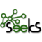

PRISM
⚡
Break
Tutti i progetti
Piattaforme
Protocolli
Informazioni
Dona Bitcoin

Seeks Project
Motori di ricerca
Piattaforma aperta e decentralizzata per ricerche collaborative.
Maggiori informazioni
Sito ufficiale
Articolo Wikipedia
Info sviluppo
Licenza del progetto
Codice sorgente
Piattaforme supportate
GNU/Linux
Motori di ricerca